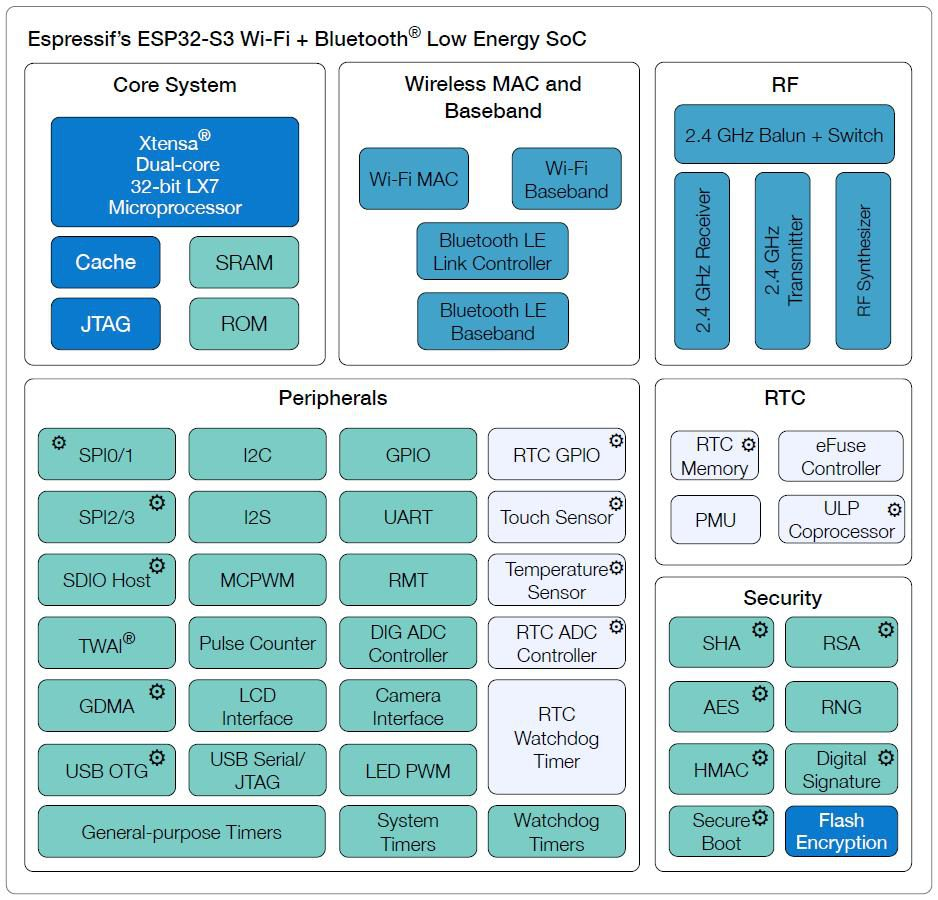

XIAO ESP32S3 开发原理进阶（二）：从芯片底层到完整固件
上一部分我们讲了 GPIO、通信、FreeRTOS 和供电原理。
接下来深入一层：为什么 ESP32-S3 能够运行程序？程序如何控制硬件？不同驱动如何组合成一个完整产品？
理解这些内容，你就不只是会使用现成的 Arduino 示例，而是能够借助 Codex 开发自己的固件。
一、先理解 ESP32-S3 内部结构

ESP32-S3 可以理解成一台高度集成的微型计算机。
它主要包含以下部分：
| 内部模块 | 工作内容 |
|---|---|
| CPU | 执行 C/C++ 指令 |
| SRAM | 保存运行中的变量和数据 |
| ROM | 保存芯片固化的启动代码 |
| Flash | 保存应用程序和配置 |
| PSRAM | 扩展运行内存 |
| GPIO Matrix | 将内部外设信号映射到物理引脚 |
| DMA | 在外设和内存之间传输数据 |
| Wi-Fi / BLE | 无线网络和蓝牙通信 |
| Timer | 定时、计数和周期控制 |
| Interrupt | 响应硬件和软件事件 |
其中有三个特别重要的概念：
1. CPU：负责计算
例如：
int temperature = 25;
int threshold = 30;
if (temperature > threshold) {
printf("Temperature high!");
}这段代码最终由 CPU 执行。
2. 内存：负责保存数据
程序运行时，变量、任务堆栈、通信缓冲区都需要占用内存。
3. 外设：负责与真实世界交互
例如 GPIO 控制 LED、ADC 读取电压、I2C 读取传感器。
二、ESP32-S3 上电后发生了什么？
这是理解嵌入式开发最重要的知识之一。
- 上电复位 电源稳定，芯片进入复位释放过程。
- 执行 ROM Bootloader 芯片内部固化程序开始运行，读取启动配置和启动模式。
- 加载二级 Bootloader 从 Flash 读取启动程序，初始化必要的硬件资源。
- 加载应用固件 根据分区表找到应用程序，将相关代码映射或加载到运行环境。
- 初始化 ESP-IDF 初始化系统组件、内存、驱动和 FreeRTOS。
- 执行 app_main() 正式进入你编写的应用程序。
这里要理解一个区别：
- ROM Bootloader 是芯片出厂固化的代码。
- 二级 Bootloader 是工程编译出来并存放在 Flash 中的程序。
app_main()是应用程序的入口函数。
这也是为什么 ESP32-S3 不能简单理解成把代码复制到芯片就能运行。
三、ESP-IDF 的软件架构
ESP-IDF 并不是单纯的 C 语言库，而是一套分层的软件开发框架。
例如，你要开发一个按键控制 LED 的设备：
- 应用层判断按键是否按下。
- 驱动层读取 GPIO。
- 系统层负责任务调度。
- 硬件层真正改变引脚电平。
这种分层方式能够让代码更容易维护和复用。
四、GPIO Matrix：为什么一个引脚可以有多种功能？
这是 ESP32-S3 非常重要的硬件设计机制。
传统单片机有些引脚功能是固定的，而 ESP32-S3 内部具有 GPIO Matrix，可以将内部外设信号灵活映射到不同 GPIO。
例如，一个 GPIO 可以配置为：
- 普通数字输入
- 普通数字输出
- UART 数据发送
- PWM 输出
- SPI 信号
- I2C 信号
- 外部中断输入
但需要注意，并不是所有 GPIO 都能随意使用。部分引脚可能受到启动配置、板载器件、USB、Flash 或 PSRAM 等功能占用。
举个例子：控制电机速度
电机不能简单通过 GPIO 高低电平来精确控制速度。
通常使用 PWM：
占空比越大，电机驱动器获得的平均控制电压通常越高，电机速度也可能越高。
ESP-IDF 提供 LEDC 驱动，可以输出 PWM：
#include "driver/ledc.h"
void pwm_init(void)
{
ledc_timer_config_t timer = {
.speed_mode = LEDC_LOW_SPEED_MODE,
.duty_resolution = LEDC_TIMER_10_BIT,
.timer_num = LEDC_TIMER_0,
.freq_hz = 1000,
.clk_cfg = LEDC_AUTO_CLK
};
ledc_timer_config(&timer);
ledc_channel_config_t channel = {
.gpio_num = 1,
.speed_mode = LEDC_LOW_SPEED_MODE,
.channel = LEDC_CHANNEL_0,
.timer_sel = LEDC_TIMER_0,
.duty = 512,
.hpoint = 0
};
ledc_channel_config(&channel);
}这里使用 GPIO1 作为示例，实际接电机时必须通过电机驱动器，不能直接让 GPIO 驱动电机。
五、ADC、DAC 和数字信号的区别
ESP32-S3 与外界通信时，不只是高电平和低电平，还需要处理模拟信号。
| 类型 | 工作方式 | 应用 |
|---|---|---|
| GPIO | 读取 0/1 | 按键、开关 |
| ADC | 模拟电压转数字值 | 电池电压、模拟传感器 |
| PWM | 数字脉冲模拟控制 | LED 亮度、电机速度 |
| I2S | 数字音频传输 | 麦克风、音频 DAC |
| SPI | 高速串行通信 | 显示屏、存储器 |
| I2C | 双线串行通信 | 温度传感器、RTC |
ADC 的工作原理
假设某个传感器输出 0～3.3V 的模拟电压。
ADC 会将模拟电压转换成数字采样值。
例如，假设使用理想的 12 位 ADC：
理论上可以表示 0～4095 的数字量。
但实际 ESP32-S3 的 ADC 存在非线性、噪声和衰减配置等因素，不能简单地把 ADC 原始读数直接当作精确电压。
I2S 的工作原理
如果以后开发语音设备，就要重点理解 I2S。
I2S 通常包含：
- BCLK：位时钟
- WS：左右声道时钟
- DIN：接收音频数据
- DOUT：发送音频数据
例如：
这就是一个基本的数字音频系统。
六、内存管理：为什么有些 ESP32-S3 项目容易崩溃？
ESP32-S3 的程序运行需要合理使用内存。
主要有四类：
| 内存 | 用途 |
|---|---|
| ROM | 芯片内部固化代码 |
| SRAM | CPU 运行数据、变量、堆栈 |
| Flash | 固件、文件系统、持久化配置 |
| PSRAM | 大容量缓冲区和动态数据 |
这里有一个关键区别：
Flash 不等于 RAM。
例如，固件存储在 Flash 中，但运行时创建的大型数据缓冲区通常需要 RAM 或 PSRAM。
实际案例：音频缓冲区
假设录制 16kHz、16 位、单声道 PCM 音频：
也就是说：
- 1 秒音频：约 32KB
- 10 秒音频：约 320KB
- 60 秒音频：约 1.92MB
如果没有合理的缓冲区设计，很容易造成内存不足。
因此，在开发 XIAO ESP32S3 应用时，需要学会：
- 监控剩余堆内存。
- 合理使用 PSRAM。
- 避免频繁动态分配内存。
- 控制任务堆栈大小。
- 使用 DMA 友好的内存缓冲区。
另外，DMA 对内存地址和缓存属性可能有要求，不能假设任意 PSRAM 缓冲区都能直接交给所有外设驱动使用。
七、FreeRTOS：如何让多个功能同时运行？
假设你开发一个设备，需要同时完成：
- 读取按键
- 连接 Wi-Fi
- 采集传感器
- 发送数据
- 更新显示屏
如果全部写在一个循环中，某个网络操作阻塞时，可能影响按键响应。
FreeRTOS 的解决办法是将功能拆分为任务。
例如：
#include "freertos/FreeRTOS.h"
#include "freertos/task.h"
void button_task(void *arg)
{
while (1) {
// 检测按键
vTaskDelay(pdMS_TO_TICKS(20));
}
}
void sensor_task(void *arg)
{
while (1) {
// 读取传感器
vTaskDelay(pdMS_TO_TICKS(1000));
}
}
void app_main(void)
{
xTaskCreate(button_task, "button", 2048,
NULL, 5, NULL);
xTaskCreate(sensor_task, "sensor", 4096,
NULL, 3, NULL);
}这里的 2048 和 4096 是任务堆栈大小参数，ESP-IDF 中以字节为单位。
实际产品还要增加任务错误处理、资源释放、优先级设计和任务间同步。
八、ESP-IDF 工程为什么要采用组件化设计？
这是从学习型程序走向正式产品的关键一步。
很多初学者把所有代码都写在 main.c 里面，后期功能一多就很难维护。
更好的方法是把不同硬件功能拆成独立组件。
例如：
xiao_firmware/
│
├── CMakeLists.txt
├── sdkconfig
│
├── main/
│ ├── main.c
│ └── CMakeLists.txt
│
├── components/
│ ├── xiao_board/
│ │ ├── board_config.h
│ │ └── board_init.c
│ │
│ ├── button/
│ │ ├── button.c
│ │ └── button.h
│ │
│ ├── led/
│ │ ├── led.c
│ │ └── led.h
│ │
│ ├── wifi/
│ │ ├── wifi_manager.c
│ │ └── wifi_manager.h
│ │
│ ├── display/
│ ├── audio/
│ ├── storage/
│ └── power/
│
└── docs/
├── pinout.md
├── architecture.md
└── hardware.md这样做有几个好处：
- 更换传感器，不需要重写整个程序。
- 更换 Wi-Fi 业务逻辑，不影响 GPIO 驱动。
- Codex 可以独立分析和修改某个组件。
- 可以把成熟的驱动复用到其他 XIAO ESP32S3 项目中。
九、从源码到固件，编译系统究竟做了什么？
ESP-IDF 使用 CMake 管理工程。
一次完整编译大致经历：
ESP-IDF 还会生成分区表、Bootloader、应用程序等不同文件。
典型 Flash 分区包括：
| 分区 | 用途 |
|---|---|
| NVS | 保存 Wi-Fi 配置、设备参数 |
| OTA Data | 保存 OTA 启动选择信息 |
| Factory / App | 存放应用固件 |
| SPIFFS / FAT | 存放文件和资源（按需配置） |
分区布局不是固定的，需要根据固件大小、OTA 需求和存储空间规划。
十、调试原理：如何找到程序中的问题？
正式开发不能只依靠编译成功。
需要建立四种调试能力：
| 调试方式 | 能发现的问题 |
|---|---|
| 串口日志 | 程序执行流程、错误信息 |
| GDB 调试 | 变量、函数、调用堆栈 |
| Core Dump | 崩溃时的任务和运行状态 |
| 示波器 / 逻辑分析仪 | GPIO、SPI、I2C、PWM 时序 |
例如，Wi-Fi 连接失败时：
ESP_LOGI("WIFI", "Starting WiFi...");
ESP_LOGI("WIFI", "Connecting...");
ESP_LOGE("WIFI", "Connection failed");ESP-IDF 提供统一日志系统，可以按模块区分日志级别。
遇到 Guru Meditation Error 时，应重点查看异常类型、PC 地址、回溯堆栈和对应 ELF 文件，而不是直接猜测是 GPIO 接错。
十一、将所有原理转化成实际开发能力
建议把 XIAO ESP32S3 的学习拆成三个阶段。
- GPIO 输入输出
- 按键中断
- PWM
- ADC
- I2C / SPI / UART
- FreeRTOS
- Wi-Fi / BLE
- HTTP / MQTT
- NVS 存储
- 内存管理
- OTA 升级
- 模块化固件
- 低功耗设计
- 故障恢复
- PCB 与外设连接
- FreeCAD 外壳
- 整机测试
十二、下一课：深入理解 ESP32-S3 的底层架构
我建议接下来按照真正的嵌入式工程师学习顺序继续，而不是直接堆砌代码。
我的建议是先学 CPU、寄存器、中断和时钟原理。这部分弄明白之后，GPIO、PWM、定时器、FreeRTOS 和驱动程序就能串成一个完整的知识体系。